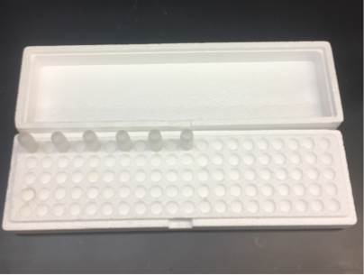
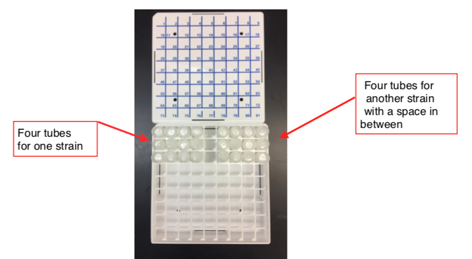

Freeze/Thawing Worms
(Adapted from Judith Kimble's Lab, December 2018)
This protocol is used to generate and maintain large stocks of common strains (e.g., N2).
Freezing Worms
- Pick worms to six 6 cm plates you wish to freeze for each strain.
- For most strains, 4-6 plates is enough. For sick strains, more plates will result in a higher titter and therefore a better thaw rate.
-
Check the genotype of the strain so you can follow any phenotypes to make sure the animals are correct.
-
Store the plates at the optimal temperature for your strain (20°C for most strains) until the 6 cm plates are starved.
-
The strain is ready to freeze when there is no bacteria on the plate and there are few or no embryos remaining on the plate. Most of the animals should be L1 or L2.
-
Prepare the number of cryovial tubes (Room 223, Shelf 2) with cryo-safe labels (Printed on Label maker) with the appropriate information (e.g. - strain name, date frozen) that you want to freeze. Use "Cryovials Label Template" for printing labels with the correct information.
-
We currently freeze six cryovial tubes per strain: four for our working stocks, one for long-term liquid nitrogen storage and one to use as a test thaw.
-
For freezing transgenic strains the lab creates: freeze five tubes per independent line of that strain. Three for working stocks in the -80°C, one for liquid nitrogen storage, and one to use as a test thaw.
-
When the last tube is thawed, you must re-freeze the strain.
-
Get an ice bucket.
-
Heat the Freezing Buffer (Peggy's recipe) in the microwave very slowly, checking every 30 seconds to see if it is melted. Put it in a 50 degree water bath until ready to use.
-
Loosen the lids of all the cryovials.
-
With a serological pipet, take about 6.5 mL of M9 for six 6 cm plates and dispense on the first six cm plate. Wash the worms off the plate. Using the same serological pipet, continue to wash worms off from all the plates.
-
Put 1 mL of worms and M9 solution in each cryovial. Less volume can be added to the test thaw cryovial but remember how much was added for the addition of the Freezing Buffer step.
-
Put cryovials with worms on ice for 5 min.
-
Start a timer to check elapsed time of worms on ice.
-
Add an equal amount of Freezing Buffer as M9 buffer per tube. This will be 1 mL except maybe for the test thaw tube.
-
Vortex the cryovial.
-
Then put the cryovials back on ice for 5 min. The elapsed time for adding the freezing buffer and vortexing should be about 5-6 min.
-
Place tubes in a 1.5 mL tube styrofoam container in the -80°C.

-
Cover the 1.5 mL tube styrofoam container with the lid and secure with a rubber band.
-
Make sure to enter the strain in the "Worms" database in Quartzy.
-
After a week or so, a test thaw can be done. Use the small styrofoam carton in the bottom of the -80°C with a metal block on dry ice to hold your agar frozen worm strains. Take the cryovial that needs to be thawed and place it in the metal block for transport to the bench. Rub the vial between your palm for 2 seconds. Heat a metal spatula in a flame and rotate around the outside of the cryovial until you can get a chunk free to place on a 10 cm plate. Place the chunk on the outer edge of the plate. Keep the melted worms to the outside of the plate as you want them to crawl into the OP50. Put the cryovial back into -80°C along with the metal block. Put the plate at the desired temperature for the worm strain. Check the plate after ~48-72 hr. If you see gravid animals and embryos on the plate, the strain survived the thaw. If you do not see gravid animals and embryos, try freezing the strain again, but start with more 6 cm plates (Step 1). If the strain has a transgenic marker, check to see if the thawed stock still expresses the marker.
-
Move four tubes to the next available position in the Worm Stock Boxes (check Quartzy for the last strain put in position), move one tube to the next available position in the Liquid Nitrogen Stock boxes (check Quartzy). Put a space in between each strain that you freeze.

- If the strain information is not already in Quartzy, make sure to enter that information (any plasmids/ genotypes of the strain, where we got the strain, if it was lab-made or received from another lab or the CGC, growing temperature, etc.). After the tubes have been to the final Worm Stock and Liquid Nitrogen Stock positions (Step 12), indicate that information for that strain in Quartzy (and how many are in stock).
Thawing and Cleaning Worms
-
Use the small styrofoam carton in the bottom of the -80°C with a metal block on dry ice to hold your agar frozen worm strains. Take the cryovial that needs to be thawed and place in the metal block for transport to the bench. Rub the vial between palms for 2 seconds. Heath a metal spatula in a flame and rotate around the outside of a cryovial until you can get a chunk free to place on a 10 cm plate. Place the chunk on the outer edge of the plate. Keep the melted worms to the outside of the plate as you want them to crawl into the OP50. Put cryovial back into -80°C along with the metal block.
-
Delete the appropriate tube form the Worm Stock Box database in Quartzy.
-
If there is bacterial contamination:
-
Once there are gravid animals on the 10 cm plate, bleach the animals to clean any bacterial contaminants:
-
Place 15 μL of bleach solution (recipe below) on the edge of a labeled 6 cm plate.
-
Place a minimum of 6 gravid animals into the bleach (10-15 animals is good). The bleach should dissolve the cuticle of the adult worms, releasing the embryos. Leave the plate lid-side up until all the bleach has soaked into the plate. After the bleach has soaked in, move the plate, lid-side down, to the optimal temperature for the worms.
-
After ~24 hr., move L1s from the bleach plate to 4 separate clean, labeled 6 cm plates. You want between 10-20 L1s per plate - the more, the better.
Reagent Recipes
M9 (different from M9 in lab recipe book)
- Mix the following reagents:
| Reagent | Amount Needed |
|---|---|
| KH2PO4 | 6 g |
| Na2HPO4 | 12 g |
| NaCl | 10 g |
| dH2O | up to 2 L |
-
Autoclave on liquid cycle for 30 min.
-
Make sure the volume is maintained during autoclaving by autoclaving in the large autoclave (the autoclave on the left).
-
When the M9 is cool, add: MgSO4 0.5 mL for 500 mL
-
Store in 2 L aliquots.
Peggy's Freezing Solution
- Mix the following:
| Reagent | Amount Needed |
|---|---|
| KH2PO4 , 1M pH 6 | 3 g |
| NaCl, 5 M | 5 g |
| Na2HPO4.7H2O | 11.3 g |
| MgSO4, 1 M | 1 mL |
| dH2O | up to 1 L |
-
In a 1 L flask, add 300 g of glycerol and 4 g of bacto agar.
-
Add about 500 mL M9 solution and stir bar and heat to dissolve the agar.
-
Add M9 to just shy of 1 L and mix.
-
Transfer to a graduated cylinder and bring the volume up to 1 L.
-
Put 200 mL per bottle.
-
Autoclave for 20 min.
Bleach solution
| Reagent | Amount Needed |
|---|---|
| NaOCl (from Fisher, cat #SS290-1) | 2 mL |
| 10 M NaOH | 0.5 mL |
| dH2O | up to 10 mL |
Store at 4°C.